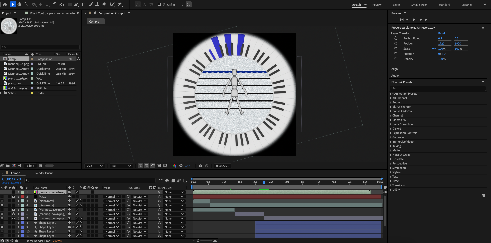
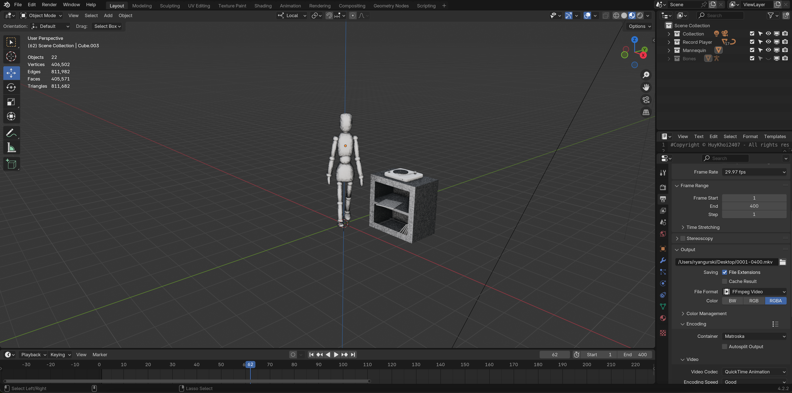
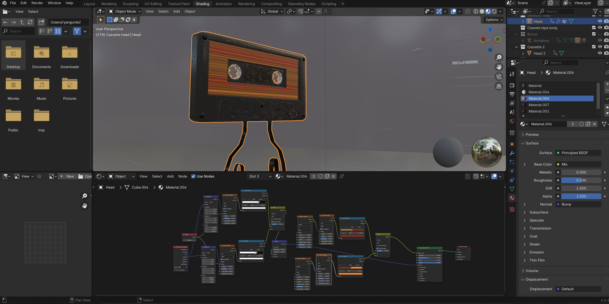
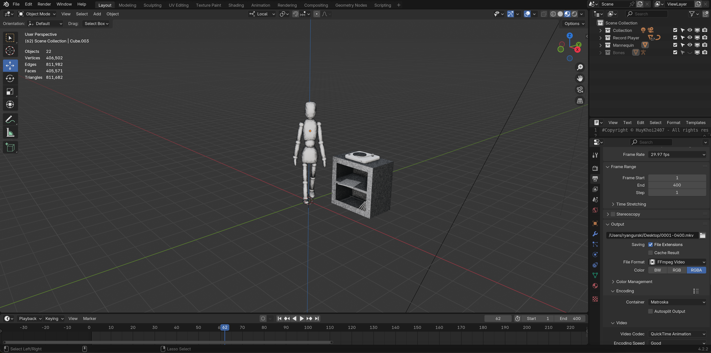
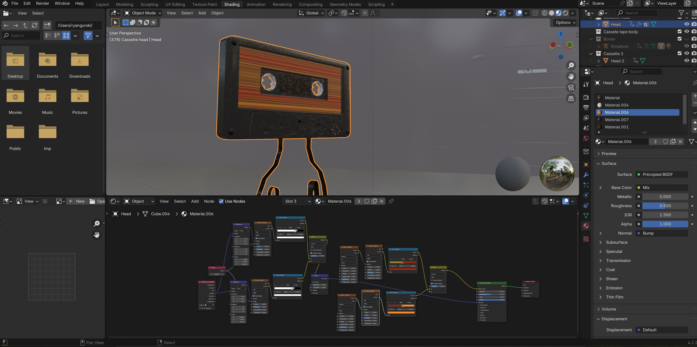
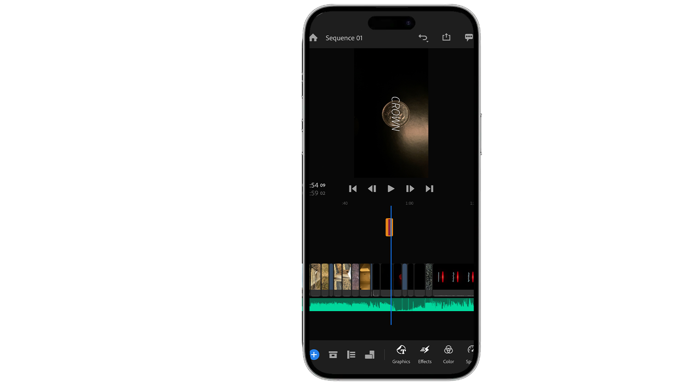

Hello, my name is Ryan Gurski. I specialize in video, primarily in post production roles, although I possess a variety of other capabilities such as 3D modeling, animation, and web design. These skills have enhanced my creative ability in video creation: my experience with web design aided me in creating a web-based interactive video titled “Door Number 3,” I often combine live-action with animation, and I also make exclusively 2D and 3D animated videos.

 



I’m currently a student at the University of Lethbridge working towards completing a Bachelor of Fine Arts in New Media with a minor in General Music Studies. My work has been featured on the University of Lethbridge’s New Media Student Showcase page for my interactive video, “Door Number 3,” as well as a one-minute video titled “Broken Record.” “Broken Record” was intended for a projection dome located at the Nikka Yuko Japanese Gardens, which is a traditional Japanese garden in Lethbridge, Alberta. “Broken Record” combines both 2D and 3D animation.

My interest in video first sparked while taking an introductory New Media class. At the time I was a Computer Science Major, but I quickly came to realize that I much preferred work in which I could express my creativity. Taking this New Media class was the first time I was excited about school. The first video I ever made was for that class. It was all shot and edited on an iPhone. From then on, my passion for video has continued and my technical and creative abilities have grown.

I enjoy sound design, writing, and recording original music. I’m self taught in playing the bass, guitar, and piano. I started recording my own music from a young age and expanded my producing skills by taking Digital Audio Arts classes in University. Some of the classes I took involved creating music for digital media as well as sound design for video games. I believe taking these classes has directly influenced my passion for both visual art and music. I produced an original song titled “Habit” by Dani Payne that is available on all streaming platforms. I plan to create a full album with Dani and use my passion and skills in video to make music videos for our songs.
Producer Credits
Digital Audio Arts Projects
I choose to model my work with a strong emphasis on subjective interpretation: it is open-ended enough for the individual to derive their own interpretations, but still focused enough to point one in a specific direction of intent. Often abstract, but filled with hints that point to a general meaning, my videos embody this sentiment of finding a personalized interpretation of art. One of my favourite things to do is show others my videos without explanation and ask them what it means to them. If the responses are slightly varied and personalized, yet still follow my original intent, my goal of achieving this sense of interpretive art is met.
The processes and stylistic design which I gravitate towards influences my avenue of video creation to be focused on the connections between music and visuals. In my creative process, I use sound and original music to contribute to an expanded understanding of the visuals presented. Combining sound and video gives context to the meaning and creates a specific mood for my work. I often write music and then create my videos based on the structure and mood of the music, or I alternatively write music after completing the video with the intent of enhancing the visual and auditory experience. Including original music in my videos is essential in my work: one is not complete without the other.